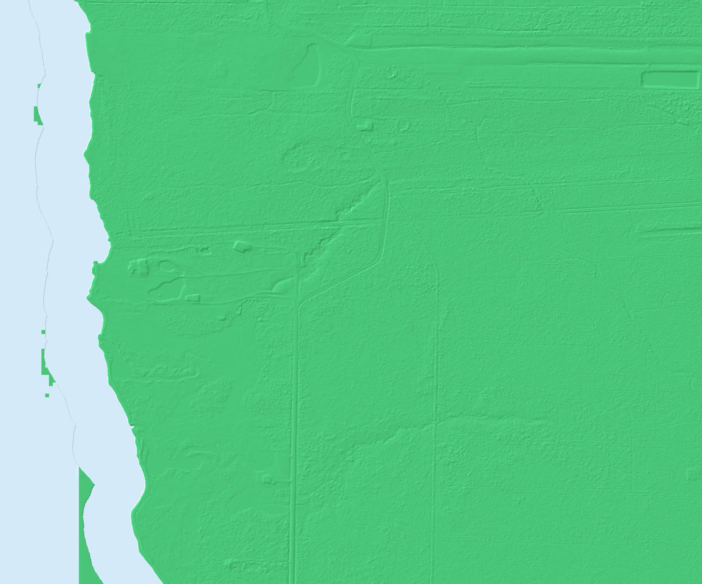

Record what you see
One tap records the current GPS, time, accuracy, heading, and orientation. Photo and Voice Note also preserve the actual evidence.

Photographs
Every shown photo has original image bytes stored on this iPhone. Finish Inspection is blocked if any photo cannot be recovered.
Inspection package ready
Everything is in one file.
Save Inspection PackageDo not clear the inspection until ChatGPT confirms it received the package.
Map key
Red: subject parcel
White/black: neighboring parcels
Before entering the property
Confirm “Offline ready.” Keep Safari open and keep the iPhone charged. Low Power Mode and a locked screen can pause browser GPS. Carry a battery pack for large parcels.
Troubleshooting and recovery
The Finish Inspection button is the normal workflow. These individual data exports are only for technical recovery; they do not include photographs and are not a complete inspection package.